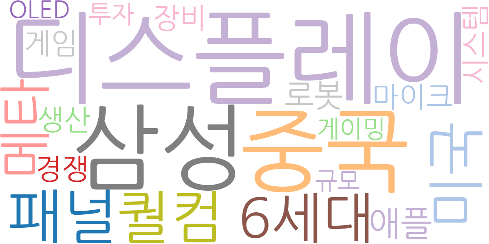
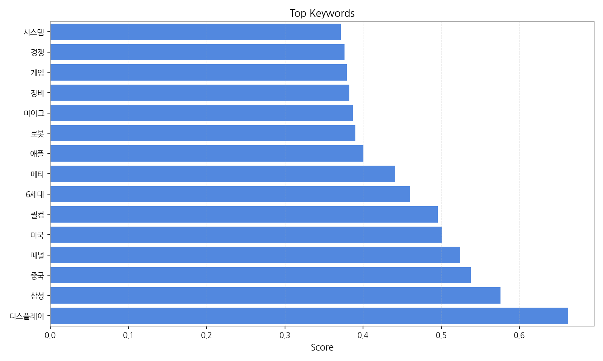
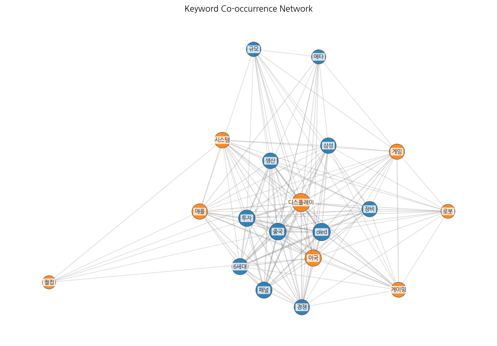
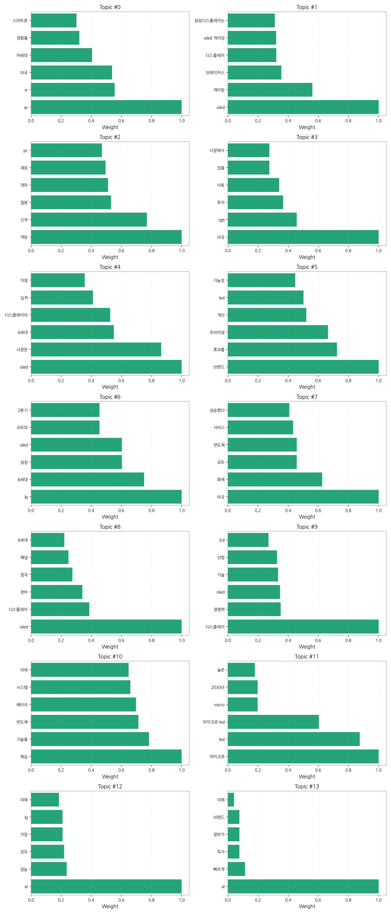
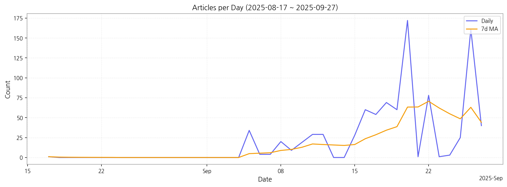

1. 핵심 맥락:
2. 최근 변화/스파이크:
3. 실무 인사이트:

| Rank | Keyword | Score |
|---|---|---|
| 1 | 디스플레이 | 0.662 |
| 2 | 삼성 | 0.575 |
| 3 | 중국 | 0.538 |
| 4 | 패널 | 0.524 |
| 5 | 미국 | 0.501 |
| 6 | 퀄컴 | 0.496 |
| 7 | 6세대 | 0.460 |
| 8 | 메타 | 0.441 |
| 9 | 애플 | 0.400 |
| 10 | 로봇 | 0.390 |
| 11 | 마이크 | 0.387 |
| 12 | 장비 | 0.382 |
| 13 | 게임 | 0.379 |
| 14 | 경쟁 | 0.376 |
| 15 | 시스템 | 0.371 |




1. 핵심 맥락:
2. 최근 변화/스파이크:
3. 실무 인사이트:
| Idea | Target | Value Prop | Score |
|---|---|---|---|
| 메타버스 몰입형 경험을 위한 초고해상도 마이크로 OLED XR 디스플레이 | 북미 빅테크 기업 (메타, 애플, 구글 등) | 기존 LCD/OLED 대비 압도적인 해상도, 명암비, 색재현율을 제공하여 현실과 구분하기 어려운 몰입형 VR/AR 경험 제공. 초경량, 저전력 설계로 장시간 사용 편의성 극대화. 경쟁사 대비 높은 PPI (Pixels Per Inch) 및 빠른 응답 속도 제공. | 4.50 |
| 차량용 AR HUD (Augmented Reality Head-Up Display) 솔루션 | 글로벌 완성차 OEM (특히 프리미엄 브랜드) | 기존 HUD 대비 월등한 정보량과 직관적인 AR 인터페이스를 통해 운전 안전성 극대화. 실시간 도로 정보, ADAS 연동, 엔터테인먼트 기능 통합 제공. 경쟁사 대비 높은 밝기, 넓은 시야각, 뛰어난 이미지 품질 제공. | 4.20 |
| 차세대 QD-MicroLED 하이브리드 디스플레이 | 프리미엄 TV 제조사, 디지털 사이니지 기업 | MicroLED의 높은 휘도와 QD의 넓은 색 영역을 결합하여 최고의 화질 제공. 기존 LCD/OLED 대비 압도적인 명암비 및 시야각 제공. 모듈형 설계로 다양한 크기 및 형태 구현 가능. 경쟁사 대비 낮은 생산 비용 및 높은 수율 확보. | 4.00 |
| IT 기기용 폴더블 OLED 패널 솔루션 | 글로벌 스마트폰 제조사 (삼성전자, 애플, 샤오미 등) | 기존 폴더블 패널 대비 월등한 내구성 및 주름 개선. 얇고 가벼운 디자인으로 휴대성 극대화. 뛰어난 화질 및 넓은 시야각 제공. 경쟁사 대비 낮은 폴딩 곡률 반경 및 높은 내절성 확보. | 3.80 |
| AI 기반 디스플레이 공정 자동화 및 수율 개선 솔루션 | 디스플레이 패널 제조사 (국내외) | AI 기반 실시간 공정 데이터 분석 및 예측 모델을 통해 불량 발생 가능성 최소화. 자동화된 공정 제어 및 최적화로 생산 효율성 극대화. 숙련된 엔지니어의 의존도 감소 및 인건비 절감. 경쟁사 대비 높은 수율 및 낮은 불량률 달성. | 3.50 |